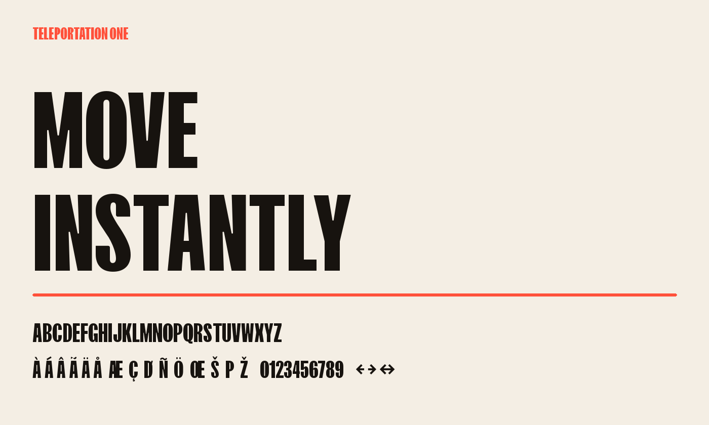

Teleportation One is a bold, all-caps display family designed by Ryan Oksenhorn. Its compact, forward-driving forms combine visible speed with sturdy weight, giving short messages a direct and energetic voice. Broad strokes establish a dense color, while angled terminals and clipped details keep that weight in motion. The result is assertive without becoming fragile: counters remain open enough to read quickly, and the forms hold together when a headline is viewed at a distance.
The lowercase character set intentionally shares the uppercase design. Typing mixed-case text therefore creates a consistent unicase texture rather than alternating between two different alphabets. This makes capitalization a compositional tool: writers can use case for semantics while designers receive a stable line of compact display forms. The approach is especially useful for labels, calls to action, numbers, short navigation elements, posters, packaging, titles, and wayfinding. It is deliberately less suited to long paragraphs, where a quieter text face will create a more comfortable reading rhythm.
The family contains one static Regular style. Under the single-weight naming convention, Regular describes the family’s only style even though its visual voice is unapologetically heavy. Default numerals are proportional so dates and short quantities fit naturally into headlines. The OpenType tnum feature supplies tabular alternates for scoreboards, timers, prices, and columns. Standard ligatures turn typed arrow sequences such as ->, <-, and <-> into matching arrow glyphs, with caret positions that preserve predictable text editing.
Teleportation One supports the complete Google Fonts Latin Core set, covering common Western and Central European languages. The character set also includes combining marks, localized Catalan punctuation, currency signs, mathematical operators, arrows, and typographic punctuation. Mark and mark-to-mark positioning allow accents to attach dynamically, including stacked combinations. These additions make the family practical beyond an English-only specimen while preserving the same compact visual language throughout the set.
At display sizes, the family works well with tight horizontal space and generous vertical breathing room. Longer words benefit from slightly increased tracking so the heavy diagonal terminals do not crowd one another. In multi-line settings, use enough leading to let each line keep its silhouette; the shapes are intentionally dense and should not feel vertically compressed. Pairing Teleportation One with a neutral sans serif or serif for body copy creates a useful contrast between expressive headlines and sustained reading.
Teleportation One is available as source and compiled font software under the SIL Open Font License, Version 1.1, with no Reserved Font Names. Development, reproducible build instructions, and release history are available in the Teleportation One upstream repository. The family may be used, studied, modified, embedded, and redistributed under the terms of that license.
